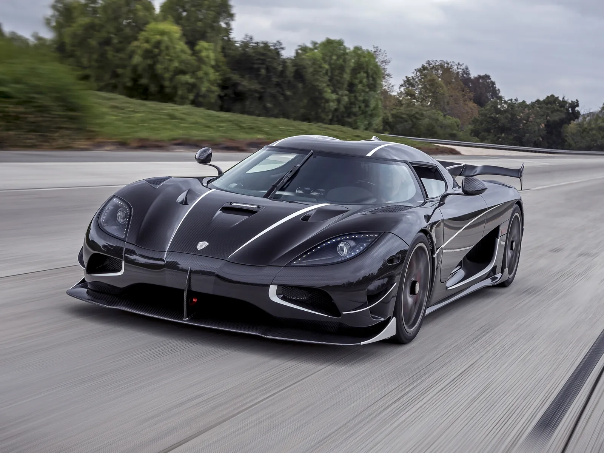
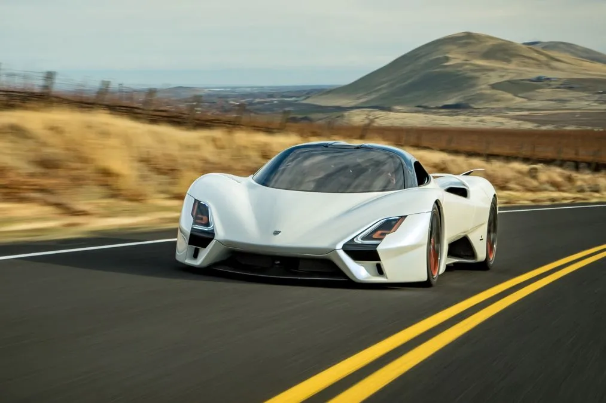

BIENVENIDOS A KOUDTOS
Los coches deportivos son uno de los deseos de muchos hombres en el mundo, y es que año con año los diferentes fabricantes de autos de lujo se esmeran no solo por ofrecer nuevos modelos con mejoras en el diseño, interior y motor, sino también tienen una lucha entre marcas para demostrar quién tiene el coche más rápido del mundo.
Mis ultimas adquisiciones

2.- Koenigsegg Agera RS

3.- SSC Tuatara